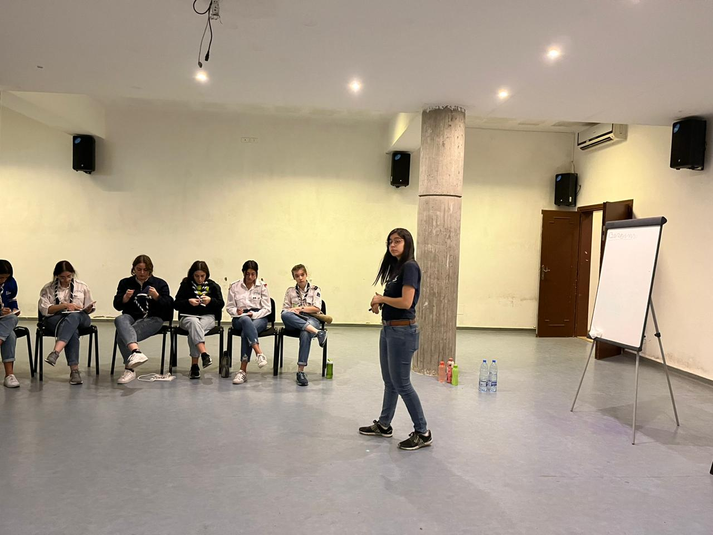

I have gained a lot of experience in soft skills, from the these trainings. Notably in:
- Leadership
- Communication
- Critical Thinking
- Public Speaking
Recently, I particpated in a TOT seminar, which now allows me to plan, prepare, and carry out training plans.